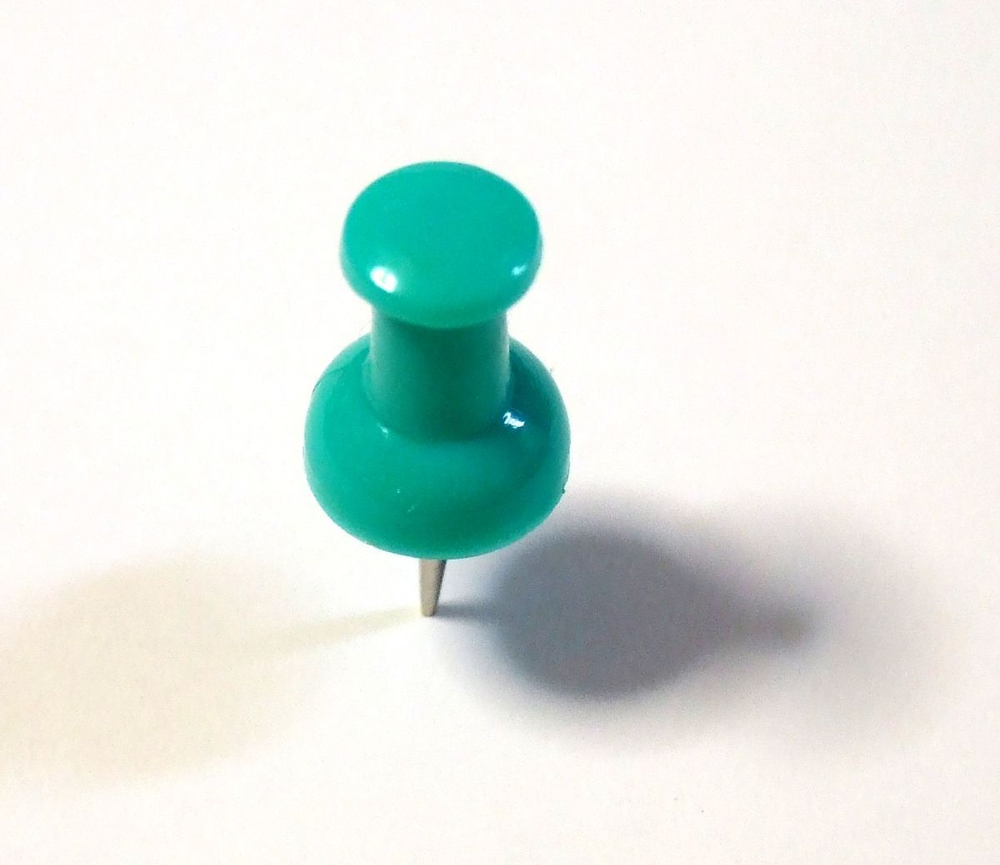

Anatomie
L'anatomie du chat est semblable à celle des autres espèces de félidés. Il possède un corps fort et flexible, des réflexes rapides, des dents pointues et des griffes rétractables adaptées à la mise à mort de petites proies. Le squelette est composé de 250 os. Les vertèbres du cou sont courtes, et la colonne vertébrale est très souple. mâchoire inférieure Total : 30 Denture commune aux Felidae La clavicule des chats, de petite taille comme pour tous les félins, est reliée au sternum par un unique ligament : cela lui confère une grande souplesse, les épaules pouvant bouger indépendamment l’une de l’autre. Comme tous les carnivores, la dernière prémolaire supérieure et la première molaire inférieure forment les carnassières qui permettent au chat de déchirer sa nourriture, grâce à des muscles puissants fixés aux parois latérales de son crâne, et de l’avaler sans la mâcher. L’os hyoïde est entièrement ossifié, ce qui permet au chat de ronronner mais pas de rugir14. Les pattes sont pourvues de griffes rétractiles. Le chat possède cinq doigts aux pattes antérieures, dont seulement quatre touchent le sol, le pouce restant à l’écart, ainsi que quatre doigts aux pattes postérieures14. Des cas de polydactylie existent et certains standards de races de chats l’admettent dans les concoursA 3. Les coussinets ou pelotes, sont constitués d’une membrane élastique qui confère une marche silencieuse15. Ces spécificités confèrent à l’animal une grande souplesse et une détente ample lors des sauts : il peut notamment sauter à une hauteur cinq fois supérieure à sa taille16. À la course, sa vitesse moyenne est de 40 km/h et il met 9 secondes pour faire 100 m, mais il n’est pas un coureur de fond et il se fatigue assez vite16. Contrairement à ce que l’on peut penser, tous les chats savent très bien nager et ils n’hésiteront pas à se jeter à l’eau s’ils y sont contraints17. Un chat pèse en moyenne entre 2,5 et 4,5 kg et mesure de 46 à 51 cm sans la queue, qui peut, elle mesurer de 20 à 25 cm de long. Le record de poids et de taille est détenu par Himmy, un chat castré australien qui, à sa mort en 1986, pesait 21,3 kg pour 96,5 cm de longueur totale et un tour de taille de 84 cm